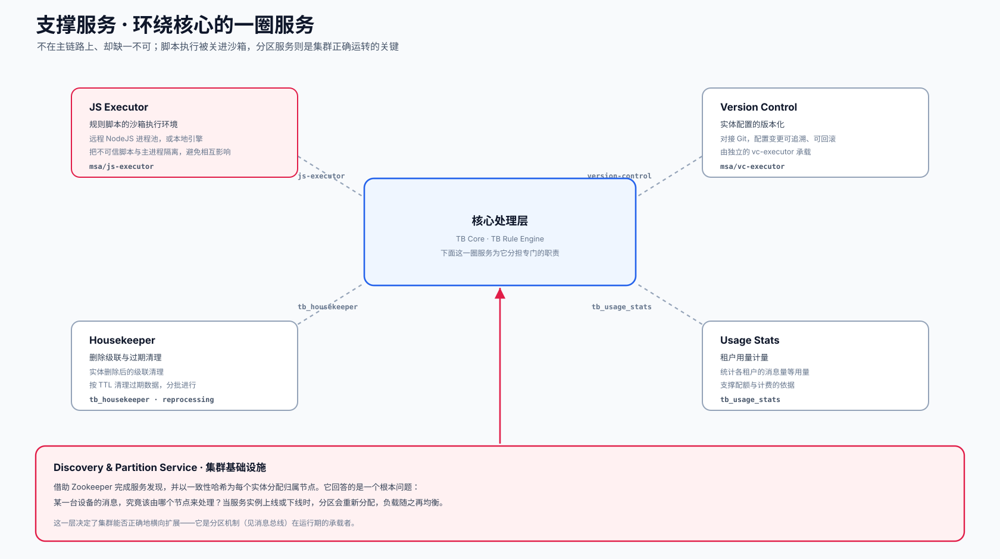

这一层在做什么
主链路负责把设备数据接进来、处理掉、存下去，是平台运转的主干。但仅有主干还不够——总有一些工作，既不适合并入主链路、拖慢它的节奏，又确实必须有人来做。支撑服务正是这样一圈"配角"：它们各自从核心分担一项专门的职责，让主链路得以保持专注与轻快。
这些服务大多通过各自的队列与核心交互，彼此之间相对独立。把它们从核心剥离出来，一方面避免了相互干扰，另一方面也让每一项能力都能够单独部署、单独伸缩。
内部结构
四项任务服务环绕着核心，各通过专属队列交互；底部的 Discovery 与 Partition Service 则作为集群基础设施支撑全局。

五项服务，逐一说明
JS Executor 沙箱
规则链里的脚本类节点，需要执行用户自定义的逻辑。这些脚本是不可信的代码，直接在主进程里跑会带来风险。JS Executor 把它们放进一个隔离的执行环境——远程的 NodeJS 进程池，或本地引擎——既限制了影响范围，也避免某段脚本拖慢核心处理。
msa/js-executor · js-executor 队列Version Control Git
把实体配置接入 Git 做版本化。规则链、仪表盘这类配置的每一次改动都可追溯、可回滚，团队协作时也有了清晰的变更历史。由独立的 vc-executor 承载这部分工作。
msa/vc-executor · version-control 队列Housekeeper 清理
负责删除级联与过期清理。一个实体被删除后，与它相关的数据需要被一并清理干净；遥测等数据也会按照设定的存活时长（TTL）被分批清除。这些工作放在后台异步进行，不占用主链路。
tb_housekeeper · reprocessing 队列Usage Stats 计量
统计各租户的用量，例如消息条数等指标，作为配额与计费的依据。它让平台能够清楚地知道，每个租户实际消耗了多少资源。
tb_usage_stats 队列分区服务：集群正确扩展的关键
在这一圈服务里，Discovery 与 Partition Service 的分量明显更重。它借助 Zookeeper 完成服务发现，并以一致性哈希为每个实体分配归属节点，回答的是一个根本问题：某一台设备的消息，究竟该由哪个节点来处理？
它的关键之处，在于应对集群的动态变化。当一个服务实例上线或下线时，分区会重新分配，负载随之再均衡。倘若这件事没做对，同一台设备的消息就可能在节点之间漂移，顺序与状态都将失去保障。可以说，它是消息总线里那套分区机制，在运行期的真正承载者——分区的规则在那里定义，而把规则落到具体节点上的，是这里。
把脚本执行单独隔离，是另一处值得留意的取舍。规则引擎完全可以在主进程里直接跑脚本，省去一次跨进程调用。把它放进独立的沙箱，付出的是一点调用开销，换回的是安全边界与稳定性——不可信代码即便出问题，也困在沙箱之内，伤不到核心。
在整套架构中的位置
与其他几层不同，支撑服务并不严格处在线性的数据流上，而是横向地服务于整套系统。
主链路上的每一层都各管一段流程，而支撑服务更像是横跨其上的一组公共能力：脚本执行服务于规则引擎，分区服务服务于整个集群，清理与计量则服务于平台的长期健康。它们不在序列里占一个固定的位置，却让序列得以稳定运转。
源码位置
独立可执行服务
脚本执行与版本控制的独立进程。
msa/js-executor · msa/vc-executor清理与用量
Housekeeper 与 Usage Stats 的队列处理。
common/queue/housekeeper · usagestats发现与分区
服务发现接口与分区归属判定。
common/discovery-api · queue/discovery